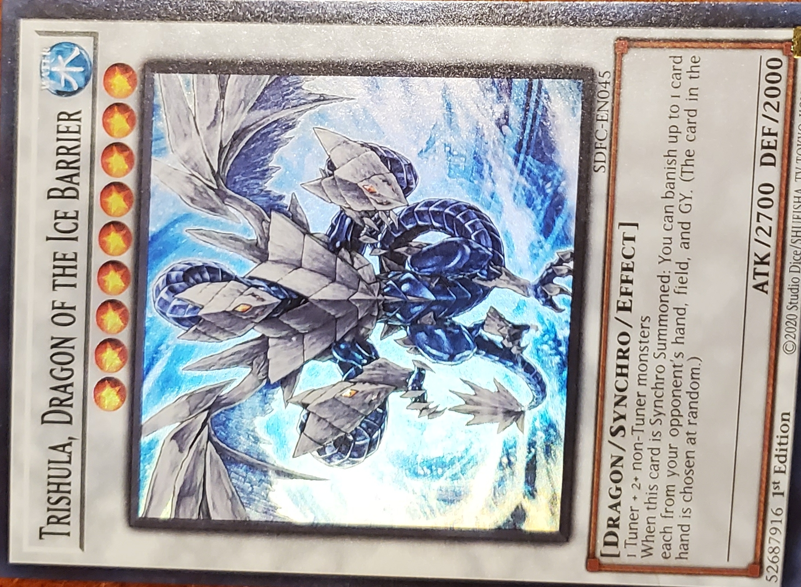

Trishula, Dragon of the Ice Barrier

Water
Level: 9
Dragon
Synchro/Effect
Atk/2700 Def/2000
1 Tuner + 2+ non-Tuner monsters
When this card is Synchro Summoned: You can banish up to 1 card each from your opponent's hand, field, and GY. (The card in the hand is chosen at random.)